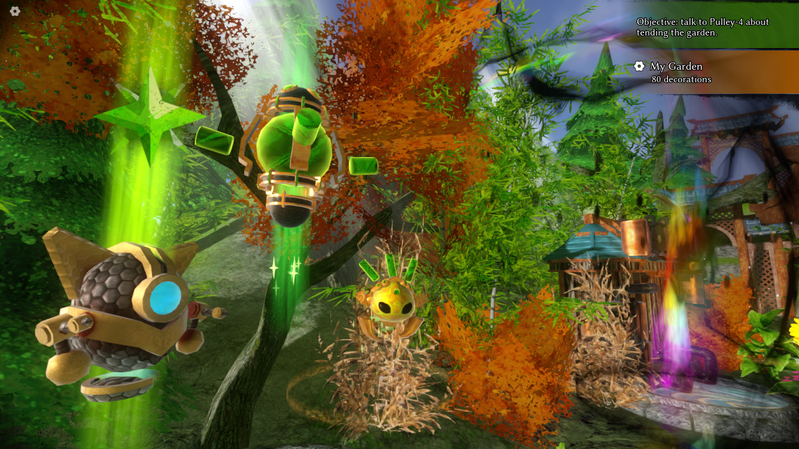

Take some time to relax, potter, and decorate in Jade Spring, a small, independent Guild Wars 2 sandbox fan game. Tend your garden as a Xunlai jade bot, clearing weeds and pests, dispelling Dragonvoid blights, and furnishing your plot with architecture, flora, furniture, and ornaments from across Tyria!
- Zen cleaning — engage in mini-games to spruce up your garden, clearing out bugs, invasive plants, trash, and leftover strands of Dragonvoid. Collect Karma from each task to spend on permanent improvements to your gardening and decorating abilities!
- Granular decoration — decorate your garden using a robust placement and manipulation system which lets you move, rotate, scale, snap, and clear items. Acquire enough karma to unlock the Decoration Manager, allowing you to clear items by type, change the time of day, and otherwise influence the garden at a broad scale.
- A Guild Wars 2 tribute — Jade Spring is an independent developer’s love letter to Cantha and to Guild Wars 2 in general, featuring hand-made art, models, animations, and music directly inspired by the worlds of Tyria.
Development Notes #2

Hey everyone! It’s been just under two months since the first development log for Jade Spring was published (and just shy of three months since the repository was opened), so it’s about time for a second quick check-in! First of all, to anyone who has been interested in Jade Spring, thank you so much.
((Caption.))
Notice as specified by ArenaNet’s content terms of use: © ArenaNet LLC. All rights reserved. NCSOFT, ArenaNet, Guild Wars, Guild Wars 2, GW2, Guild Wars 2: Heart of Thorns, Guild Wars 2: Path of Fire, Guild Wars 2: End of Dragons, and Guild Wars 2: Secrets of the Obscure and all associated logos, designs, and composite marks are trademarks or registered trademarks of NCSOFT Corporation.